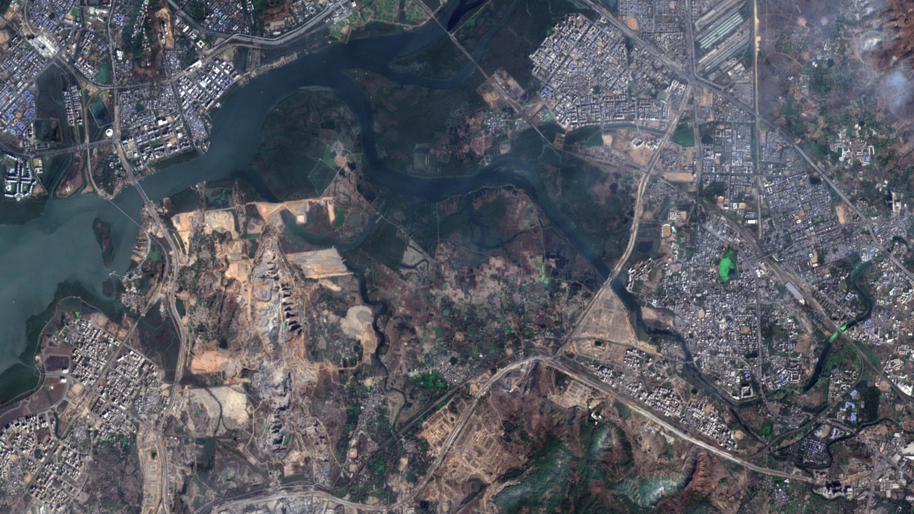
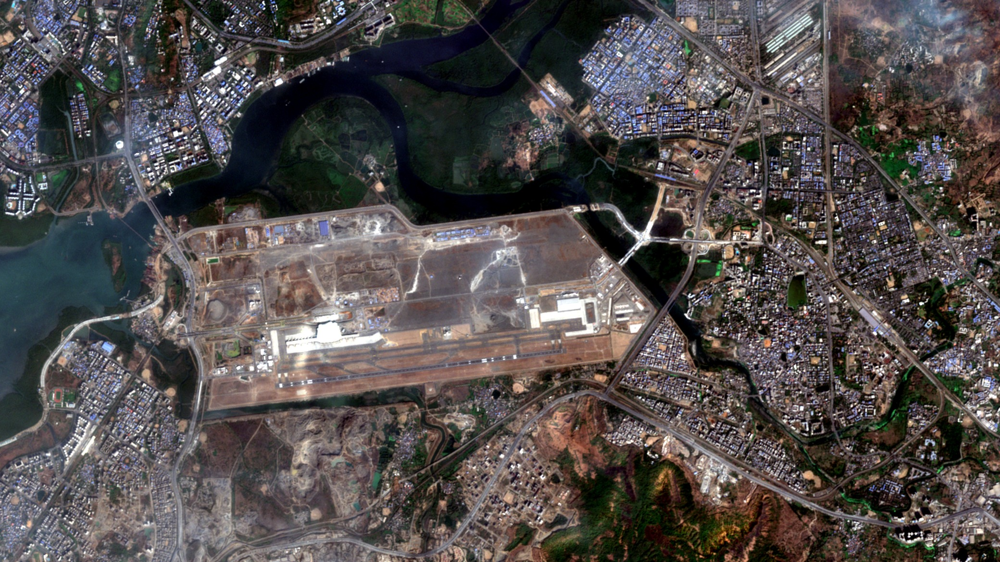

RUNWAY ≈ 3.7 KM
MOAT ATLAS · FROM ORBIT
NAVI MUMBAI AIRPORT SITE
JAN 2018
JAN 2026
SENTINEL-2 · 10 M PIXELS
2026
2018
Contains modified Copernicus Sentinel data 2018, 2026
January 2018: open land on the edge of Navi Mumbai.
January 2026: an international airport.